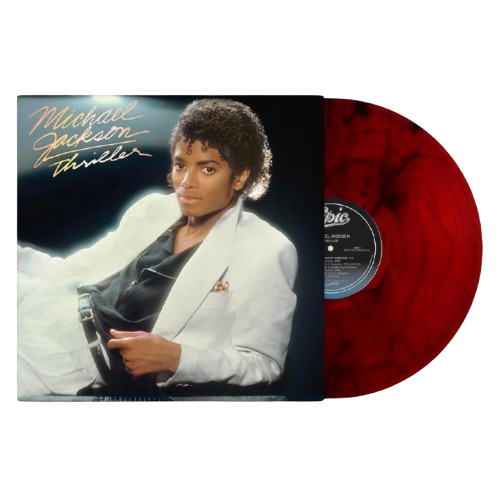
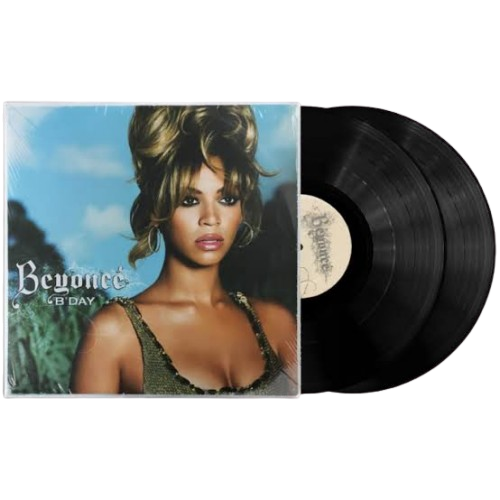
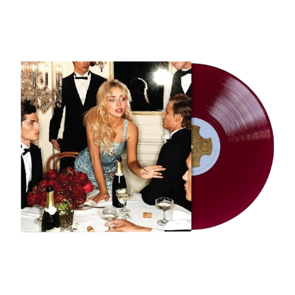

Lançado em 30 de novembro de 1982, Thriller, de Michael Jackson, é o álbum mais vendido de todos os tempos, com mais de 70 milhões de cópias mundialmente.
Valor:R$:504,99

é o segundo álbum de estúdio da cantora americana Beyoncé, lançado em 4 de setembro de 2006 para coincidir com o seu aniversário de 25 anos.
Valor:R$:327,64

Man's Best Friend é o sétimo álbum de estúdio de Sabrina Carpenter, lançado em 29 de agosto de 2025 pela Island Records
Valor:R$:250,00